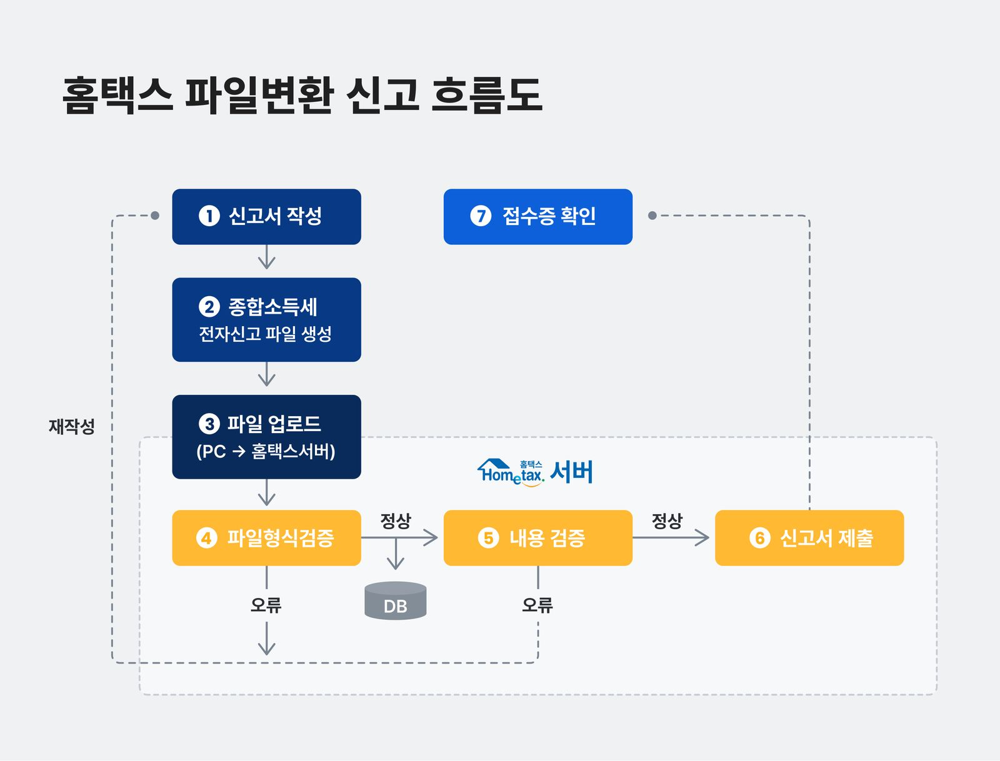

삼쩜삼
세금 신고를 간소화하면서 수임 동의와 개인정보 보호를 어떻게 다뤄야 할까?
세금 신고에 필요한 정보를 모으고 환급 대상·예상 금액 확인과 신고 절차를 돕는 서비스.
학습 목적정보 취합·계산·신고 자동화가 어떤 절차를 줄이는지 살펴보고, 수임 동의 안내와 사용자의 이해 사이의 차이를 분석했습니다. 개인정보를 다루는 서비스의 운영 기준을 이해하기 위해 ISMS도 추가 학습했습니다.
개인 학습 기록 · 관찰한 경험, 기획 의도에 대한 해석, 개선 제안을 구분해 정리했습니다. 수치·요금·정책은 분석 당시 조사한 자료이며 현재 기준이나 직접 만든 성과가 아닙니다.
과거 학습 노트를 재구성한 UX 분석입니다. 현재 서비스 운영 사실이나 세무·법률 안내로 제시하지 않습니다.
01사용자와 해결 방향
누구를 위한 서비스인가신고 여부와 방법을 잘 모르거나, 세무 지식·시간·비용 부담을 느끼는 사용자.
Why · 사용자가 찾는 이유
세무 지식이 없어 돌려받을 세금이 있는지와 신고 방법을 알기 어렵다. 필요한 자료를 직접 모으고 계산하거나 대리 신고를 맡기는 시간·비용을 줄이고 싶다.
What · 제공 경험과 해결 방식
인증과 정보 입력을 통해 환급 대상·예상 금액을 확인하고 신고 절차를 진행하도록 돕는다. 자료 취합과 계산을 연결해 사용자가 세법과 신고 서식을 일일이 알아보는 부담을 줄인다.
02핵심 기능과 벤치마킹
- 간편한 인증·정보 취합
- 신고 준비에 필요한 정보를 모으는 과정을 줄임.
- 계산·신고 자동화
- 반복적인 계산과 파일 생성 과정의 복잡성을 서비스가 흡수.
- 환급·소비 정보
- 자신의 경제적 상황을 이해하는 접점으로 서비스 확장.
환급뿐 아니라 경제 정보로 접점 확대
소비 리포트·연봉 계산·환급을 함께 살폈다. 개인과 개인사업자가 매년 바뀌는 세법, 신고 지식·시간, 대리신고 비용을 감당하기 어렵다는 문제를 쉬운 용어·직관적 UI와 원스톱 흐름으로 줄인다고 해석했다.
03사용자 흐름과 기획 의도
관찰한 경험
- 정보 취합·계산·신고를 연결하는 흐름과 쉬운 용어·적은 입력 단계를 분석했습니다.
- 원문에 기록한 수임 동의 관련 이용자 반응과 환급을 과도하게 기대하게 하는 문구를 검토했습니다.

크게 보기 ↗계산과 파일 생성에서 각각 발생하는 복잡성
- 세액 계산
- 사용자 입력과 홈택스·정부24 연동 자료, 부양가족 정보를 모아 나이·소득·근로기간 등의 공제 요건을 검토하는 구조를 조사. 누락·과다 공제를 줄이면서 많은 계산 조합을 처리하는 점에 주목.
- 자동 신고
- 필수값 누락·인식 불가 값으로 전자신고 파일 생성이 실패하는 원인을 분류해 개선하는 사례를 학습.
- 당시 사례 수치
- 원문에는 7개 화면·10개 버튼, 절차 최대 89% 간소화, 자동신고율 91.3%→96.2%가 소개됨. 회사 자료를 조사한 기록이지 직접 개선한 성과가 아님.
신뢰 회복과 재방문을 위한 마케팅
대상자가 아니거나 서비스 신뢰가 낮아 이탈한 가입자를 위해 앱 접점을 안정화하고 다른 신고 영역으로 확장하는 전략을 조사했다. 원문에는 신규 고객 360만 명, 전년 동기 대비 트래픽 157.9% 증가 사례가 기록돼 있다.
왜 이렇게 설계했을까 · 나의 해석
- 사용자가 절차를 쉽게 마친다는 것과 중요한 동의 내용을 충분히 이해한다는 것은 따로 확인해야 한다고 봤습니다.
- 신뢰는 적은 클릭 수뿐 아니라 어떤 정보가 어떻게 쓰이는지 예측할 수 있는 안내에서도 만들어진다고 정리했습니다.
04문제와 개선 제안
Pain Point · 걸리는 지점
- 원문에 기록한 수임 동의 관련 반응에서, 약관상 고지와 사용자의 이해 사이의 간극을 발견했다.
- 모두에게 환급을 기대하게 하는 표현은 실제 결과와 차이가 날 수 있다.
내가 바꿔본다면
- 수임 동의처럼 영향이 큰 사항은 행동 직전에 명확하게 설명하고 확인할 수 있도록 구성.
- 환급 가능성과 결과의 차이를 설명해 기대를 조절하는 문구 검토.
05장점과 아쉬운 지점
좋았던 점
- 복잡한 절차를 연결해 전문 지식이 부족한 사용자의 진입 장벽을 낮춘다.
아쉬운 점 · 더 살필 점
- 단계가 적더라도 중요한 동의와 결과의 불확실성이 충분히 전달되는지 확인해야 한다.
접근성 확대와 동의 이해의 간극
- 시장·이용자 반응
- 2023년 4월 기준 가입자 1,546만 명·누적 환급 신고액 6,142억 원이라는 당시 자료를 참고. 아르바이트·프리랜서·긱워커 등 소액 신고자의 진입 부담을 낮춘 점과 간편한 절차·빠른 환급을 장점으로 기록.
- 신뢰 문제
- 원문에 수집한 수임 동의·세무대리인 등록 관련 불만과 회사의 약관 고지 입장을 함께 살핌. 법적 위반 여부가 아니라 고지와 사용자의 실제 이해 사이의 문제로 다룸.
- 기대 차이
- 환급이 없는 경우와 “누구나”라는 인상 사이의 간극을 기록. 당시 메모의 약 3명 중 1명이라는 수치는 일반 환급 확률로 적용하지 않으며, 대상·가능성 안내가 필요하다는 문제의식으로 정리.
06내가 주목한 점
추가 학습 · ISMS의 목적과 검토 대상
삼쩜삼의 인증 사례를 계기로 관리적·기술적·물리적 보호조치와 의무 대상 판정 기준을 조사했다. 아래는 당시 학습 메모를 보존한 것으로, 현재 법령·인증 신청 안내가 아니다.
| 학습 항목 | 원문에서 검토한 기준 |
|---|---|
| ISP·IDC | 통신망 제공 사업자와 집적정보통신시설 사업자. 통신사(KT·SKT·LG U+)와 서버·회선을 제공하는 데이터센터의 차이 구분 |
| 규모 기준 | 정보통신서비스 전년도 매출 100억 원 또는 직전 3개월 일평균 이용자 100만 명 기준 조사 |
| 병원·학교 | 연간 매출·세입 1,500억 원 이상에 해당하는 상급종합병원, 재학생 1만 명 이상 학교 기준 조사 |
| 판정 시 유의점 | 매출 제외 항목과 서비스 범위를 확인해야 하며, 의무 대상이 아니어도 정보유출 위험과 사업 안정성 관점에서 검토 |
인증을 검토하는 사업적 이유
위험관리와 법적 준거성, 침해사고·집단소송 피해 감소, 대외 신뢰를 핵심 이유로 정리했다. 정부과제·정보보호 평가 가점, ESG 일부 평가 대체, 보험 할인 등 부가 인센티브도 조사했으며 적용 여부는 개별 제도 확인이 필요하다.
관리과정 5단계
- 범위·정책
- 중요 업무와 서비스에 따라 보호할 자산·범위를 식별.
- 조직·책임
- 지속 운영할 조직과 경영진·실무자의 권한·책임 배분.
- 위험관리
- 위험 식별·평가 방법과 관리계획 수립.
- 대책 구현
- 위험 시나리오를 바탕으로 적절한 통제 적용.
- 사후관리
- 실제 운영과 반복 점검으로 관리체계 개선.
보호대책 13개 분야
| 분야 | 정리한 검토 사항 |
|---|---|
| 정책·조직 | 이해하기 쉬운 정책과 승인, 최고책임자·실무조직의 권한 |
| 외부자·자산 | 외부자 계약에 보안 요구사항 명시·주기 감사, 자산 분류·식별 |
| 교육·인적보안 | 시기·대상·내용·방법을 포함한 연간 교육, 중요정보 취급 직무 관리 |
| 물리·개발보안 | 무단 접근·재난 대비, 시스템 개발·변경 시 법적 요구와 취약점 검토 |
| 암호·접근통제 | 암호 강도·키·전송 보호, 접근 영역·규칙·방법 정의 |
| 운영·침해 대응 | 재기동·복구·오류 절차, 사고 보고·대응·복구·훈련 |
| IT 재해복구 | 해킹·재난·정전으로 인한 중단과 손상에 대비한 비상복구 |
자료 간 차이와 인증 절차 메모
원문에 80개 기준과 구형 104개 기준(관리과정 12개+보호대책 92개)이 함께 있어 한 시점의 동일 기준으로 합치지 않았다. KAIT·TTA·OPA의 심사, KISA와 금융 분야 FSI의 역할, 최소 3개월을 고려한 준비 일정도 학습한 항목이다. 기관별 역할·적용 기준·기간은 실제 신청 시 재확인해야 한다.
기획에 가져갈 기준
- 사용자가 이해한 동의인지까지 확인해야 신뢰를 설계할 수 있다.
- 보안·개인정보·권한은 별도 운영 기준과 검증이 필요한 기획 항목으로 볼 것.